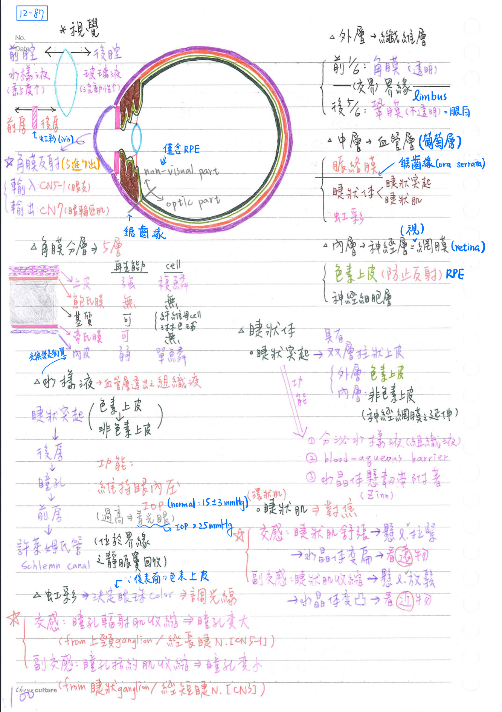
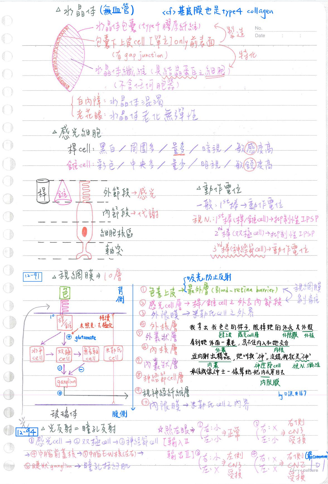
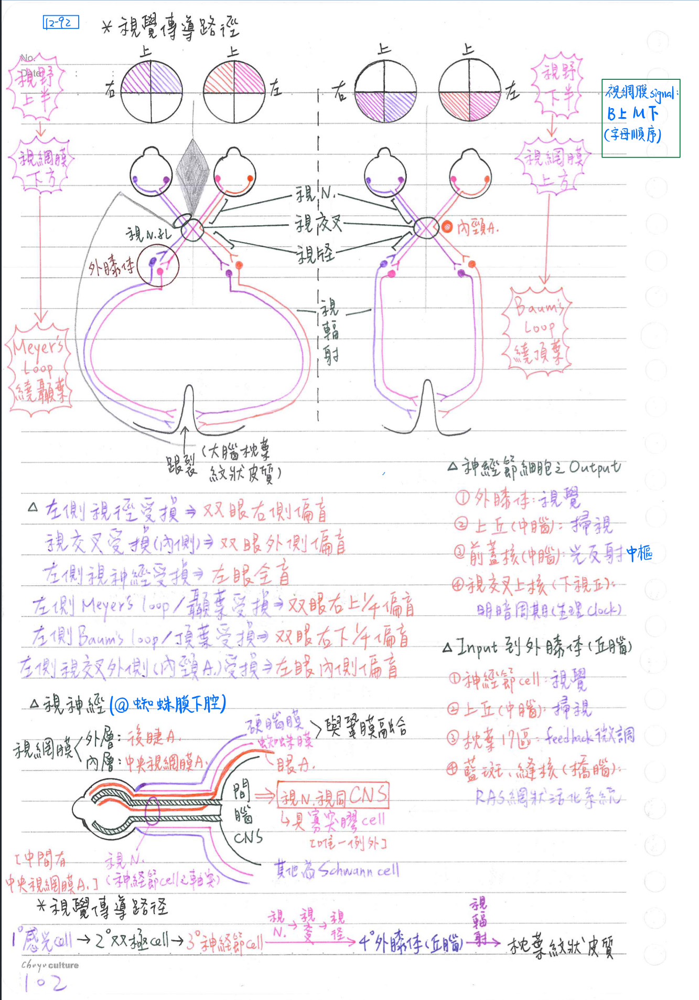
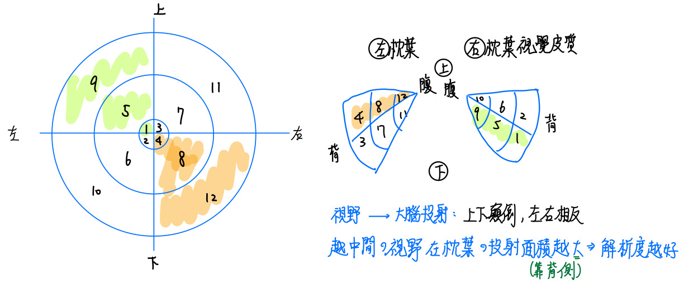
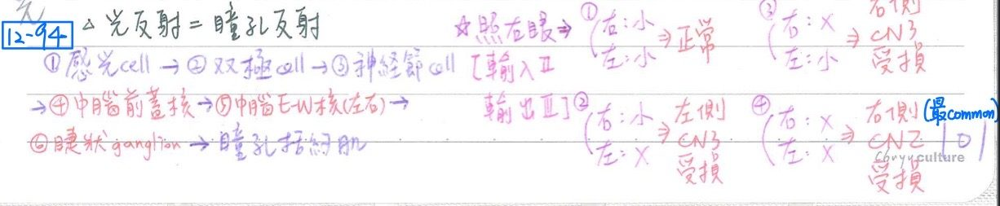
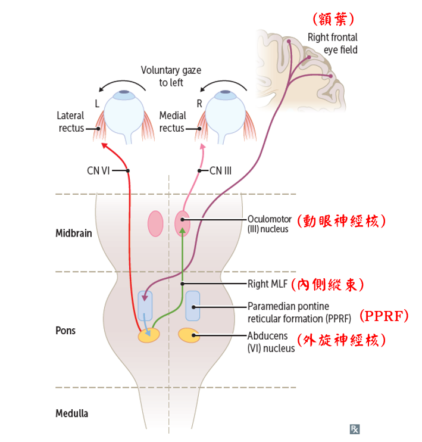

👀 特殊感覺-視覺
眼球結構
眼球壁(wall)：3層
- 外層一纖維層(fibrous coat)：
- 前1/6：角膜(cornea)→透明
- 後5/6：鞏膜(sclera)=眼白→不透明
- 界緣(limbus)：角膜、鞏膜交界處(corneoscleral junction)
- 结膜(Conjunctiva)：覆於鞏膜表層
- 中層：血管層(vascular coat)=葡萄層(uvea)：
- 脈絡膜(choroid)
- 睫狀體(ciliary body)：具睫狀突起(ciliary process)、睫狀肌
- 虹彩/虹膜(iris)
- 鋸齒緣(ora serrata)：睫狀體、脈絡膜交界處
- 內層：神經層(nervous coat)=視網膜(retina)
- 感光部(optic part)：臨脈絡膜，位於鋸齒緣之後方，含2層
- 外層= 網膜色素上皮(retinal pigment epithelium, RPE)
- 內層=神經細胞層：具感光细胞、雙極細胞、神經節細胞等
- 非感光部(nonvisual part)：臨睫狀體、虹彩，位於鋸齒緣之前方，
- 僅含網膜色素上皮，不具神經細胞層
- 感光部(optic part)：臨脈絡膜，位於鋸齒緣之後方，含2層
眼球腔(cavity)：分前、後腔
- 水晶體(lens)：將眼球分成前、後兩腔
- 後腔(posterior cavity)：具玻璃液(vitreous humor)→流動性高
- 前腔(anterior cavity)：具水様液(aqueous humor)→黏度高
- 虹彩(iris)：將前腔分成前、後兩房
- 後房(posterior chamber)
- 前房(anterior chamber)
角膜(cornea)：5層構造
- 角膜反射路徑：CN5-1→★鼻睫N→長&短睫N→橋腦(三叉橋腦核)→橋腦(兩側顏面運動核)→兩側顏面N→兩側眼輪匝肌
- 含規則排列膠原纖原→透明、可屈光
- 角膜不含血管，由水様液負責滋養
- 散光(astigmatism)：角膜表面屈率不規則，以圓柱鏡(cylindrical lens)矯正
- 5層構造：
- 角膜上皮(epithelium)：
- 源自外胚層，★[110-1]複層(5~7層)鱗狀上皮；厚約50μm
- 再生力強，替換率快(約7天)
- 含豐富感覺神經末梢←★鼻睫N
- ★[110-1]鮑氏膜(Bowman membrane)：不能再生，形成屏障以防止感染，無細胞
- 厚約8-10μm
- ★[110-1]角膜基質(stroma)：構成角膜90%厚度，具淋巴球、纖維母細胞
- 由60層薄板(thin lamelle)所構成，各層是由平⾏排列的collagen fibrils所構成
- ★[110-1]帝氏膜(Descemet membrane)：可再生，無細胞
- PAS(+)；厚約10μm
- 角膜內皮(endothelium)：單層鳞狀上皮
- 與水樣液交換營養物質
- 再生力弱，受損後→導致角膜水腫或不透明
- 角膜上皮(epithelium)：

眼球之血液供給
- 眼A(ophthalmic a)：再分2獨立系統
- 中央網膜動脈(central retinal a)：經視N內中央，供给視網膜之內層(神經層)
- 睫狀動脈(ciliary a)：具高度吻合
- 短後睫狀動脈(SPCA)：供給視網膜之外層、脈络膜後部
- 長後睫狀動脈(LPCA)：供脈络膜前部、睫狀體、虹彩
- 前睫狀動脈(ACA)：供給結膜、虹彩、睫狀體
睫狀體(ciliary body)
- 睫狀突起(ciliary process)：
- 構造：具雙層柱狀上皮
- 外層(色素上皮)：與視網膜色素上皮(RPE)相連續
- 內層(非色素上皮)：可視為神經視網膜之延伸；分泌水樣液
- 功能：
- 形成血液-房水屏障(blood-aqueous barrier)
- 提供水晶體懸韌帶(zonula fiber)附著
- 分泌水様液(aqueous humor)
- 分泌路徑流程：睫狀突起→後房→瞳孔→前房→許萊姆氏管(Schlemn canal)
- 許萊姆氏管：為靜脈竇，位於角膜、鞏膜交界處[界緣(limbus)]
- 水狀液功能：維持眼內壓(IOP,正常值=15+3mmHg)、營養角膜
- 青光眼(glaucoma)：IOP上升→造成視野缺損[IOP>25mmHg]
- 構造：具雙層柱狀上皮
- 睫狀肌：平滑肌；調節水晶體曲度[調焦作用(accommodation)]
- 交感興奮(看遠物)：睫狀肌舒張→懸韌帶(Zinn)拉緊→水晶體變扁(曲率下降)
- 副交感興奮(看近物)：睫狀肌收縮→懸韌帶(Zinn)放鬆→水晶體變凸(曲率上升)
虹彩(iris)
- 血管層(葡萄層)之最前方，中央開口為瞳孔(pupil，作為光圈調節光量)
- 基本構造：
- 前表面=纖維血管性基質(fibrovascular stroma)：具凹凸溝嵴
- 富含血管之疏鬆結締祖織，具多量黑色素细胞、平滑肌等
- 瞳孔括約肌(sphincter pupillae)：收縮(副交感興奮)→瞳孔變小
- 副交感神經纖維：經短睫N(CN3分枝)；源自睫狀神經節(副交感節後)
- 瞳孔輻射肌(dilator pupillae)：收縮(交感興奮)→瞳孔變大
- 交感神經纖維：經長睫N(CN5-1分支)；源自上頸神經節(交感節後)
- 後表面=雙層色素性上皮層(pigmented epithelium)：呈平滑面
- 具大量色素可吸收光線，並決定眼珠顏色
- 前表面=纖維血管性基質(fibrovascular stroma)：具凹凸溝嵴
水晶體(lens)
- 基本構造：無血管
- 水晶體包囊(lens capsule)：由[重點]type IV collagen構成 <cf>基底膜也是type IV collagen
- [重點]包囊下上皮細胞(subcapsular epithelium)：單層立方上皮
- 彼此以間隙結合(gap junction)相接，僅位於水晶體前表面
- 水晶體纖維(lens fiber)：具結晶蛋白(crystallins)、長條透明之細胞
- 水晶體纖維細胞：源自包囊下上皮細胞，不含任何胞器
- 常見疾病：
- 白內障(cataract)：水晶體混濁
- 老花眼(presbyopia)：水晶體老化無彈性→凸不了，無法看近物
視網膜
- 視網膜之細胞：
- 視網膜色素上皮(RPE)
- 血液-視網膜障壁(blood-retinal barrier)：視網膜色素上皮彼此以結合複體(junctional complex)相連接而構成
- 可吸收光線，防反射
- 視網膜剝離(retinal detachment)：視網膜色素上皮層與神經細胞層(=受光體層；photoreceptor layer)分離
- 感光細胞：桿細胞(rod) & 錐細胞(cone) (超極化電位=抑制性電位)
- 照光後(11-cis 變成all-trans-retinal)，促使PDE活化→cGMP下降→鈉鈣通道關閉
→產生過極化→glutamate釋放下降→無法抑制bipolar cell→使ganglion cell興奮
- 照光後(11-cis 變成all-trans-retinal)，促使PDE活化→cGMP下降→鈉鈣通道關閉
- 水平细胞(horizontal)、無長軸細胞(amacrine)、雙極細胞(bipolar)：傳導視覺電位(平時超極化⇒ 抑制雙極細胞)
- 米勒氏細胞(Mueller)：支持細胞
- [重點]神經節細胞(ganglion cell)：視覺最先產生動作電位(興奮性電位)者
- 視網膜色素上皮(RPE)
- 感光細胞：可見光波長400~750nm
- 分兩種：[hint：電線桿是灰的；三角錐是紅的]
- 桿細胞[感光]：黑白，周圍多(中央無)，弱光即可刺激(較敏感)
- 數目較多(為錐細胞之 20倍)，解像力(敏銳度)較差
- 錐細胞[感色]：彩色(三原色：紅、綠、藍)，中央多(周圍少)、強光才能刺激(較不敏感)
- 數目較少，解像力較佳
- 錐細胞缺乏→色盲
- 桿細胞[感光]：黑白，周圍多(中央無)，弱光即可刺激(較敏感)
- 基本構造：
- [重點]外節段(outer segment)：光敏感區(site of photosesitivity)
→具600~1000平行重疊的膜板(membranous disc)，呈桿狀或錐狀←接收光線 - ★内節段(inner segment)：代謝區(metabolic machinery)；製造感光色素的主要區域
- 外為橢圓部(ellipsoid)：富含粒線體、微小管等
- 內為肌狀部(myoid)：富含高基氏體、粗糙型內質網(rER)等
- 細胞核區(nuclear region)
- 突觸區(synaptic region)
- [重點]外節段(outer segment)：光敏感區(site of photosesitivity)
- 分兩種：[hint：電線桿是灰的；三角錐是紅的]

- 視網膜具10層結構：
- 視網膜色素上皮(pigment epithelium, RPE)：最外層
- 感光细胞(rods & cones)：含桿細胞、錐細胞之外節段&內節段
- 外限膜(external limiting membrane)：米勒氏細胞之外界
- Mueller氏細胞與感光細胞於外限膜相連接
- 外核層(outer nuclear layer)：含桿/錐細胞之細胞核
- 外叢狀層(outer plexiform layer)：含感光細胞、水平細胞、雙極細胞等之神經突起(process)
- 內核層(inner nuclear layer)：含水平細胞、無長軸細胞、雙極細胞、米勒氏細胞等之細胞核
- 內叢狀層(inner plexiform layer)：含無長軸細胞、雙極細胞、神經節細胞等之神經突起(process)
- 神經節细胞層(ganglion cell)：含神經節細胞之細胞核
- 視神經纖維層(optic nerve fiber)：神經節細胞之神經纖維
- 內限膜(internal limiting membrane)：米勒氏細胞之內界
→作為分隔視網膜與玻璃體之基底板(basal lamina)
眼底(fundus)：眼球後方
- 黄斑(macula lutea)：眼底中央
- 中央小窩(fovea centralis)：黃斑正中心
- 僅含錐細胞，不含桿細胞
- 為視網膜最薄處，亦是視覺最敏銳處
- 因其上幾乎沒有雙極細胞及神經節細胞→光量最大
眼神經盤(optic disk)：位於黃斑鼻側
- 神經節細胞之神經纖維出眼球處，又稱視乳突(optic papilla)
- 無感光細胞→視覺盲點(blind spot)
屈光
- 屈光(折射)路徑：空氣→角膜→水樣液→水晶體→玻璃液
- 折射(refraction)：光波經交界面前進方向之彎曲程度
- 折射率(refractive power)：總共59D(diopter)
- 角膜前表面(anterior cornea)：43D(折射率最大)
- 水晶體(lens)：13D→26D(可改變率最大)
- 近視(myopia)：屈光過大(或眼軸太長)→配凹透鏡矯正
- 睫狀肌痙攣：水晶體變凸→屈光過大→假性近視
- 遠視(hyperopia)：屈光過小(或眼軸太短)→配凸透鏡矯正
視覺傳導路徑
- 傳導路徑：
- 一級神經元：感光細胞→
- 二級神經元：雙極細胞/水平細胞/無長軸細胞→
- 三級神經元：神經節細胞→(視神經→視交叉→視徑)→
- 四級神經元：丘腦(外膝體)→視輻射→大腦枕葉/紋狀皮質(striate cortex)
- 產生之電位：
- 第1級神經元(桿細胞/錐細胞)、第二级神經元(雙極細胞/水平細胞/無長軸細胞)皆產生超極化電位(抑制性電位)
- 動作電位(興奮性電位)之產生：自第3級神經元(神經節細胞)開始
- 神經節細胞之神經纖維走向：內側交叉、外側不交叉；上在上；下在下
- 上下顛倒、左右相反：右側視野由左側大腦枕葉感受；上側視野由下側大腦枕葉感受
- 黃斑部(眼底中央)由大腦枕葉最後方感受(佔視覺皮質1/3)
- 視神經(optic nerve)：
- 由視網膜之神經節細胞之軸突所構成
- 為中空構造，中央視網膜A(central retinal a；眼A分支)位於其中
- 位於眼窩中之蜘蛛膜下腔，硬腦膜鞘(sheath of dura)及蜘蛛膜與鞏膜相融合
- 視同中樞神經(CNS)之路徑(因為視網膜為間腦之突出)，具有由寡突膠細胞形成之髓鞘
<cf> 其他腦神經之髓鞘由Schwann cell形成
- 眼A(ophthalmic a；內頸A之分枝)：與視N一同穿過視神經管(optic canal)
- 視徑(optic tract)：為神經節细胞之軸突；其终止於：
- 丘腦外膝體(lat. geniculate body)：視覺傳導
- 中腦上丘(sup. colliculus)：目視搜尋(視覺軀體反射)
- 中腦前蓋核(pretectal nucleus)：光反射(瞳孔反射)
- 下視丘視交叉上核(SCN)：明暗周期
- 丘腦之外膝體(LGB)：接受輸入(input)之神經訊息，包括：
- 視覺(vision)：視網膜之丘腦之神經節細胞
- 網狀活化系統(RAS)：腦幹之藍斑核、背側縫核
- 迴饋(feedback)：大腦皮質主要視覺區(17區)
- 目視搜尋(saccade)：中腦之上丘(sup. colliculus)
- 視輻射(optic radiation)：丘腦(外膝體)→枕葉(17區)/紋狀皮質(位於禽距裂兩侧)
- 別稱：
- 膝體禽距徑(geniculocalcarine tract)=膝體紋狀皮質徑(geniculostriate tract)
- 後丘腦輻射(post. thalamic radiation)：
- 上部(Baum loop)：源自上方視網膜，途經頂葉
- 下部(★Meyer loop)：源自下方視網膜，途經顳葉
- 別稱：
視野缺陷(visual field defect) [hint：畫圖思考，視覺是由對側接收]
- 視徑(左)受損：雙右側偏盲(homonymous hemianopsia)
- 視交叉(內)受損：雙顳側偏盲(bitemporal hemianopsia)
- 視神經(左)受損：左眼全盲(left eye blindness)
- 視輻射(左)受損：雙右側偏盲(homonymous hemianopsia)
- Meyer loop(左)受損：雙右上1/4偏盲(upper quadrantanopia；pie in the sky)


[重點]光反射(lightreflex)=瞳孔反射(pupillary reflex)
- 路徑：(1°)感光细胞→(2°)雙極細胞→(3°)神經節细胞→(4°)中腦前蓋核(至左右兩側)
→後聯合/後交接(post. commissure)→(5°)中腦E-W核(CN3節前神經元)→(6°)睫狀神經節(CN3節後神經元)
→瞳孔括約肌 - 光反射之輸入路徑：CN2；輸出路徑：CN3/短睫N [2進3出]
- 同側：稱為直接性(direct)光反射；兩側：稱為一致性(consensual)光反射=間接光反射
- 光反射乃防止光照過強，以維持光量恆定

動眼系統(oculomotor system)
- 包括：快速搜尋(saccade)、平順追蹤(pursuit)、傾頭眼移(頭右傾→眼左移)、兩眼內聚(convergence；鬥雞眼的動作)等
- 機轉：由大腦皮質(額葉動眼區；area 8)、CN3, 4, 6、中腦上丘、內耳前庭系統、腦幹內側縱束(MLF)等完成
眼球水平共軛運動(horizontal gaze) [畫圖解]
- 額葉發出的運動訊號：影響同側內直肌&對側外直肌
- EX：雙眼向左看
- 右額葉眼區(frontal eye field)發出訊號
- →(交叉)對側之PPRF→再到對側外旋神經核→內側縱束(MLF)
→對側外直肌 - →(交叉回)同側動眼神經核→同側內直肌
- [考點]可能造成的病灶：
- ★右額葉受損：雙眼無法往左看→眼球向右偏、左側肢體無力(因為皮質脊髓徑受影響)
[重點]：眼球向患側偏；對側無力(不同邊)→病灶在大腦 - 左側PPRF受損：眼球向右偏、右側肢體無力(皮質脊髓徑受影響)
[重點]：眼球向對側偏；對側無力(同一邊)→病灶在腦幹 - 核間肌麻痺(Internuclear ophthalmoplegia, INO)：MLF受損
EX：右側MLF受損：右眼無法向左(無法傳遞訊號給右側動眼神經核→內直肌)
- ★右額葉受損：雙眼無法往左看→眼球向右偏、左側肢體無力(因為皮質脊髓徑受影響)

📖 書本補充：與筆記不同或筆記沒寫到的地方
⚠️
以下為對照書本後整理，筆記原文未更動。書在視覺這幾節與筆記沒有直接矛盾，以下是筆記沒寫到的部分（眼眶骨頭、附屬構造、眼眶的血管神經等）。
視神經與視野（p.477–479）
- 視神經：SSA；雙極神經元，位於視網膜；穿過視神經管；路線：視交叉→視徑→外側膝狀體→視覺放射→枕葉第17區。
- 各段接收的視野：
- 視網膜：右半視野由右眼鼻側＋左眼顳側視網膜接收。
- 視神經：來自同一眼的鼻側和顳側。
- 視交叉：兩眼鼻側纖維交叉、顳側纖維不交叉。
- 視徑：同側不交叉纖維＋對側交叉纖維。
- 視覺放射：Meyer 氏環接受對側半視野的上半部，其餘接受對側半視野的下半部。
- 主要視覺皮質：距狀溝兩側，第17區。
- 書的提示：Meyer 氏環是外側膝狀體投射到視覺區前，先往前進到顳葉再往後走到枕葉的部分纖維。
- 圖115的損傷對照（以右側為例）：右視神經→右眼全盲；視交叉→雙眼顳側偏盲；右視神經外側（未交叉纖維）→右眼鼻側偏盲；右視徑→雙眼左側偏盲；右 Meyer 氏環→雙眼左上象限偏盲；右視覺放射→雙眼左側偏盲。
- 考題補充：內頸動脈瘤壓迫視交叉左緣，只影響左眼未交叉的顳側纖維→左眼的右視野缺損（101-2-3）。
瞳孔光反射（p.488）
- 傳入肢：視神經及視徑。中樞：四疊體（頂蓋）前核、後連合、E-W 核。傳出肢：動眼神經（下分支）→睫狀神經節→睫狀短神經→虹膜的瞳孔收縮肌。
- 書的提示：瞳孔光反射路線不會進入外側膝狀體（99-2-2、105-2-4）；也不經內側縱束（104-1-6）、與三叉神經無關（108-1-14）。
- 考題補充：照左眼時左瞳孔縮、右瞳孔無反應→病灶在右動眼神經（傳出端）（101-1-22）；右側頂蓋前區到左側 E-W 核經後聯合（112-2-1）。
骨性眼眶與總肌腱環（p.513–514）
- 眼眶的壁：
- 上（頂）：額骨的眶板、蝶骨小翼。
- 下（底）：上頷骨的眶表面、顴骨。
- 內側：篩骨的眶表面、上頷骨的額突、淚骨、蝶骨。
- 外側：額骨、顴骨、蝶骨大翼。
- 總肌腱環：包圍視神經管和眶上裂（一部分），為四條直肌的起源處；穿過的構造＝視神經、眼動脈、動眼神經上和下分支、鼻睫狀神經（V1 的分支）、外旋神經。
- 不穿過總肌腱環者：額神經、淚神經、滑車神經（108-2-2、112-2-10）；眼下靜脈也走在環外（112-2-6）。
- 考題補充：同時參與眼眶、鼻腔、口腔三者形成的是上頷骨（眶底、鼻腔外側壁與底、硬腭前3/4）（111-1-11）。
附屬構造（p.515）
- 眼瞼：瞼板＝緻密結締組織，眼輪匝肌和提上瞼肌纖維在其表面；瞼板腺（Meibomian）＝皮脂腺；睫狀腺＝特化的汗腺。
- 淚器：淚腺位在眼眶的外上方；管道＝淚小管→淚囊→鼻淚管（通到下鼻道）；淚湖在眼眶內側。
- 韌帶：頰韌帶（check ligament）與下斜肌、下直肌的筋膜形成眼球懸韌帶；瞼韌帶的內側為眼輪匝肌的起點。
- 書的提示：注意瞼板腺和睫狀腺的腺體類型；提上瞼肌下方有一小條上瞼板肌，為平滑肌；提上瞼肌負責張開眼瞼（111-2-7）。
眼眶的血液供應和神經支配（p.516）
- 眼動脈分支：淚、視網膜中央、眶上、篩前和篩後、滑車上動脈；眼動脈經視神經管進入眼眶，是內頸動脈的分支；淚動脈走在視神經外側（112-2-6）。
- 眼靜脈：上眼靜脈注入海綿竇；下眼靜脈注入翼靜脈叢。
- 眼神經（V1）分支：額、淚、鼻睫狀（再分出睫狀長神經、到睫狀神經節的交通支、篩前和後神經）。
- 書的提示：睫狀長和睫狀短神經內都有交感（節後）和感覺纖維；但副交感節後纖維只走在睫狀短神經內（筆記只寫長睫N帶交感、短睫N帶副交感）。
眼球（p.517–519）
- 書的表格重點：鞏膜覆蓋後 5/6、角膜覆蓋前 1/6 且無血管；脈絡膜＝色素及豐富血管；睫狀體控制水晶體的厚度；睫狀突起分泌眼房液；虹膜有瞳孔括約肌和瞳孔擴張肌。
- 視網膜：視覺部終止於鋸齒緣；視盤＝盲點；黃斑部大部分為錐狀細胞，中央凹只有錐狀細胞；非視覺部延伸到睫狀突起和虹膜內面（含色素細胞）。
- 腔室：前房、後房充滿眼房液，異常會造成青光眼；玻璃體房充滿玻璃狀體。
- 書的提示：睫狀突起上有小帶纖維（水晶體懸韌帶）連接到水晶體。
- 考題補充：
- 視網膜外層（錐、桿細胞所在）由睫後短動脈供應，視網膜中央動脈供應內層（102-1-5，與筆記一致）。
- 調節進入眼球的光量是瞳孔（虹膜）的功能，不是睫狀體（102-2-8）；睫狀肌是平滑肌，水狀液由史萊姆氏管回收（107-1-46）。
- 角膜上皮來自外胚層、不含血管、不角質化，有神經纖維（103-1-5）。
- 視神經由前腦衍生，外有蛛網膜下腔，嚴格說屬於 CNS（104-1-32）。
📝 書中歷屆考題（點選答案作答）
101-1-12p.479
雙眼外側視野二分之一缺損 (bilateral temporal hemianopia)，最可能的損傷部位是：
103-1-28p.479
兩眼外側（顳側）視野有缺損 (bitemporal hemianopia)，最可能的病灶位置是在：
101-2-3p.480
內頸動脈血管瘤壓迫視交叉的左緣，下列何者的視覺最可能缺損？
💡 壓迫此處只影響左眼未交叉的纖維，即接收右視野的纖維。
104-2-2p.480
腦下垂體腫瘤壓迫視交叉 (optic chiasma)，最可能發生下列何種症狀？
102-1-2p.480
右側大腦顳葉之 Meyer's loop 傷害，會造成下列何種損傷？
111-2-13p.480
下列那一部位損傷會出現如圖的視野缺損情形？（圖：左眼視野與右眼視野都是右半邊塗黑，黑色代表視野缺陷）
💡 負責右半視野的是右眼鼻側及左眼顳側視網膜，兩者分別交叉及走同側進入左視徑，故左視徑受傷會造成雙眼右半視野缺損。
112-1-2p.480
一位患者右側視野缺損而左側視野正常，最可能是下列那一視覺傳導途徑受損？
💡 右側視野由右眼鼻側（在視交叉交叉進左視徑）及左眼顳側（直接走左視徑）接收，故左視徑受損會導致右側視野全部缺損。
99-2-2p.489
瞳孔在照強光後，所產生的縮瞳反應 (light reflex)，其神經傳遞路徑不包含下列何者？
104-1-6p.489
右側眼睛照光造成左側眼睛瞳孔縮小，下列何者不參與其傳導？
105-2-4p.489
下列何者不參與瞳孔光反射？
101-1-22p.489
以手電筒照射病患左眼時，其左瞳孔收縮，右瞳孔無反應，其可能的原因為？
💡 右眼無瞳孔光反射，表示右動眼神經受傷，損及其內的副交感纖維。
108-1-14p.489
正常人一側眼睛受到強光照射，雙眼瞳孔收縮，有關此反應之敘述，下列何者錯誤？
💡 參與的是接受光線的視神經，以及讓瞳孔收縮的副交感神經（走在動眼神經內）。
112-2-1p.490
光線照射右眼會使得雙側瞳孔同時縮小，這主要是因為右側的頂蓋前區 (pretectal area) 接收光線刺激後，其神經纖維經由下列何者傳遞到左側的 E-W 神經核 (Edinger-Westphal nucleus)？
💡 傳遞路線在大腦內，故不可能是上小腦腳交叉；頂蓋前區位在四疊體前面（大腦後面），前聯合與視交叉在大腦前面，故選後聯合。
111-1-11p.514
下列何者同時參與眼眶、鼻腔與口腔三者的形成？
💡 上頷骨構成眼眶底部和內側面，其腭突形成硬腭的前3/4，且構成鼻腔的底部及口腔的頂部。
108-2-2p.514
①額神經 (frontal nerve) ②鼻睫神經 (nasociliary nerve) ③動眼神經 (oculomotor nerve) ④淚神經 (lacrimal nerve) ⑤滑車神經 (trochlear nerve) ⑥外旋神經 (abducent nerve) 等六條神經中，那些不經由總腱環 (common tendinous ring) 內進出眼眶？
💡 V1 的分支中，只有鼻睫（狀）神經通過總肌腱環。
112-2-10p.514
下列何者不會出現在眼窩的共同腱環 (common tendinous ring) 內？
111-2-7p.515
下列關於眼瞼 (eyelid) 的描述，何者正確？
💡 瞼板腺是皮脂腺，分泌油脂；淚湖在眼眶內側；提上眼瞼肌負責張開眼瞼。
102-1-5p.518
下列有關視網膜的敘述，何者正確？
💡 中央凹位在黃斑部中央；視網膜外層（錐、桿細胞所在）由睫後短動脈供應，視網膜中央動脈供應內層。
102-2-8p.519
下列有關眼睛睫狀體 (ciliary body) 功能的敘述，何者錯誤？
💡 調節進入眼球的光量是瞳孔的功能。
107-1-46p.519
有關眼球睫狀體 (ciliary body)，下列敘述何項錯誤？
103-1-5p.519
下列有關角膜上皮 (corneal epithelium) 的敘述，何者錯誤？
104-1-32p.519
下列那一對腦神經為前腦 (prosencephalon) 衍生形成？
💡 視神經由前腦衍生，外有蛛網膜下腔（CNS 才有的構造），嚴格說屬於 CNS 的一部分。
112-2-6p.519
下列有關眼球血管之敘述，何者正確？
💡 眼動脈是內頸動脈的分支；眼下靜脈走在共同腱環外面；淚動脈在視神經外側。